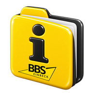
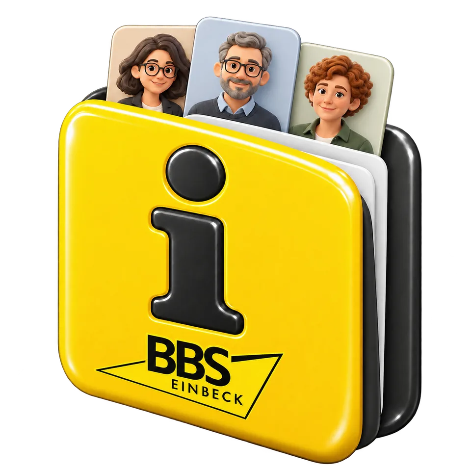

Geschützt / Protected
IServ-Anmeldung, Kollegiumsprüfung und getrennte Rechte für Lesende, Redaktion und Administration.

BBS InfoBBS EINBECKBBS Info verbindet laufende Meldungen, nummerierte Ausgaben, Beiträge aus dem Kollegium und das historische Archiv in einer geschützten Anwendung.
News for the school staff. BBS Info brings updates, numbered editions, staff contributions and the historical archive together in one protected application.
Idee und Konzeption: Marc Schulz · MIT-Lizenz · Alle Demo-Inhalte sind fiktiv.

Ein kurzer Beitrag kann sofort erscheinen. Später kann die Redaktion ihn mit weiteren Meldungen, Berichten und Steckbriefen in eine nummerierte Ausgabe übernehmen. Die Lesenden finden Inhalte über die Suche und können Ausgaben als PDF speichern.
Publish a short update immediately. Editors can later combine it with further news, reports and staff profiles into a numbered edition. Readers find information through search and can download each edition as a PDF.
IServ-Anmeldung, Kollegiumsprüfung und getrennte Rechte für Lesende, Redaktion und Administration.
Rich-Text-Editor, Bilder, Vorlagen und redaktionelle Entwürfe.
Nummerierte Webausgaben mit Beiträgen, Steckbriefen und PDF-Download.
Eigene Berichte und Steckbriefe privat einreichen und redaktionell übernehmen.
Neue Inhalte und historische, teils per OCR erfasste PDFs durchsuchen.
Persönliche Update-Abos und eine getrennte Ausgaben-Mail mit Vorschau und Freigabe.
Neu in Version 1.1: Ein 30-Tage-Papierkorb für Updates, Ausgaben, private Beiträge und Steckbriefe. Die Redaktion kann offene Kollegiumsbeiträge und unverknüpfte übernommene Steckbriefe direkt dorthin verschieben und wiederherstellen.
New in version 1.1: a 30-day trash for updates, editions, private contributions and profile sheets. Editors can move pending staff contributions and unlinked adopted profiles there directly and restore them.
Alle Ansichten wurden lokal aus den HTML-Templates mit erfundenen Namen und Inhalten erzeugt. Es gibt hier keine Anmeldung und keine Verbindung zur produktiven Anwendung.
Every view was rendered locally from the app's HTML templates with fictional names and content. This site does not connect to the protected live application.
Die öffentliche Ausgabe enthält den Anwendungscode, Tests, Beispieldateien und Installationshinweise. Eigene IServ- und Mailzugänge müssen privat eingerichtet werden.
The public repository includes application code, tests, examples and installation guides. Provide your own private IServ and mail configuration.